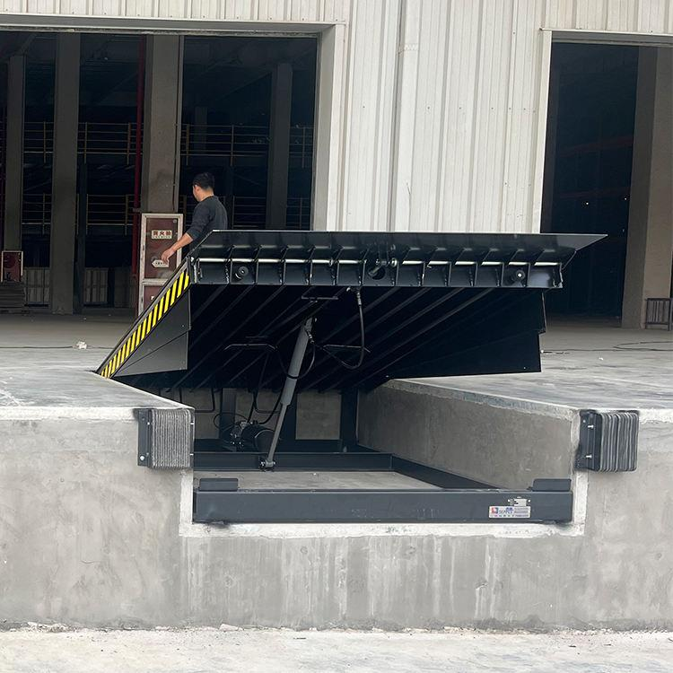
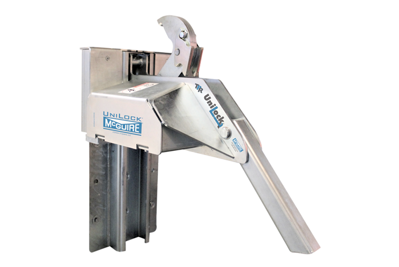
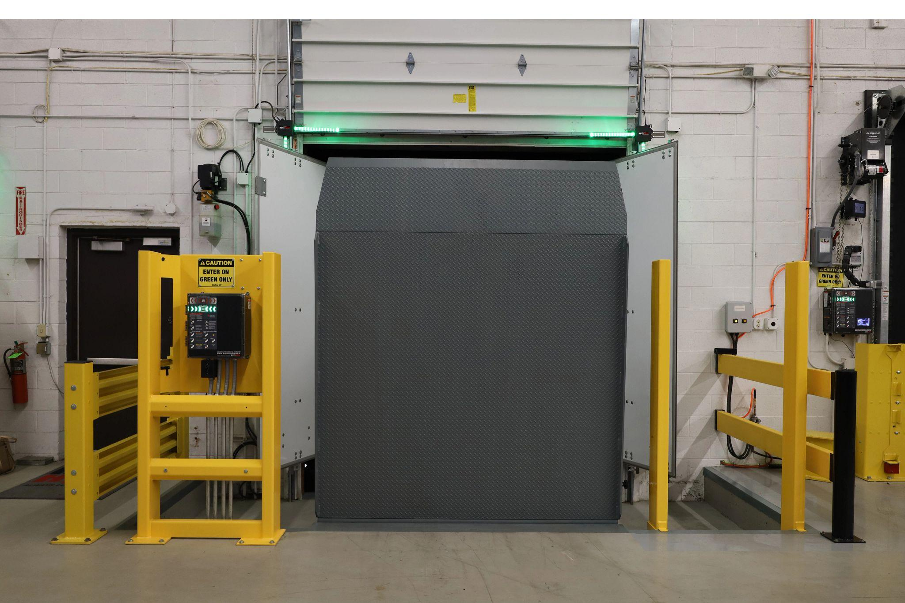
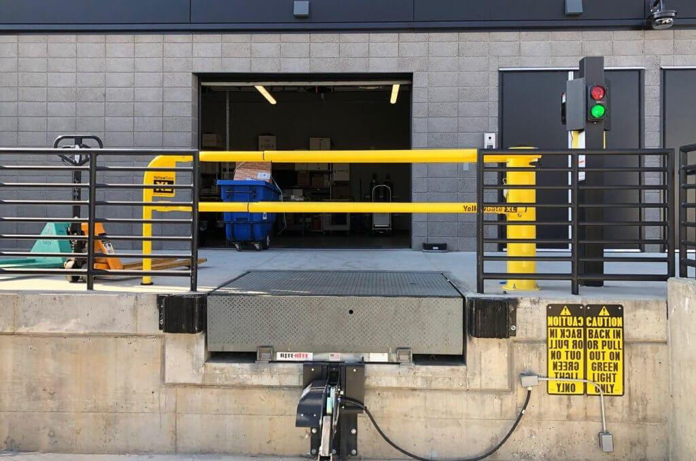
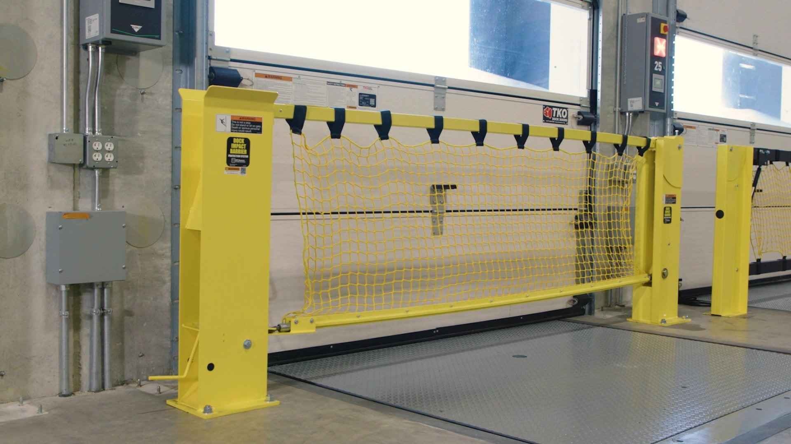
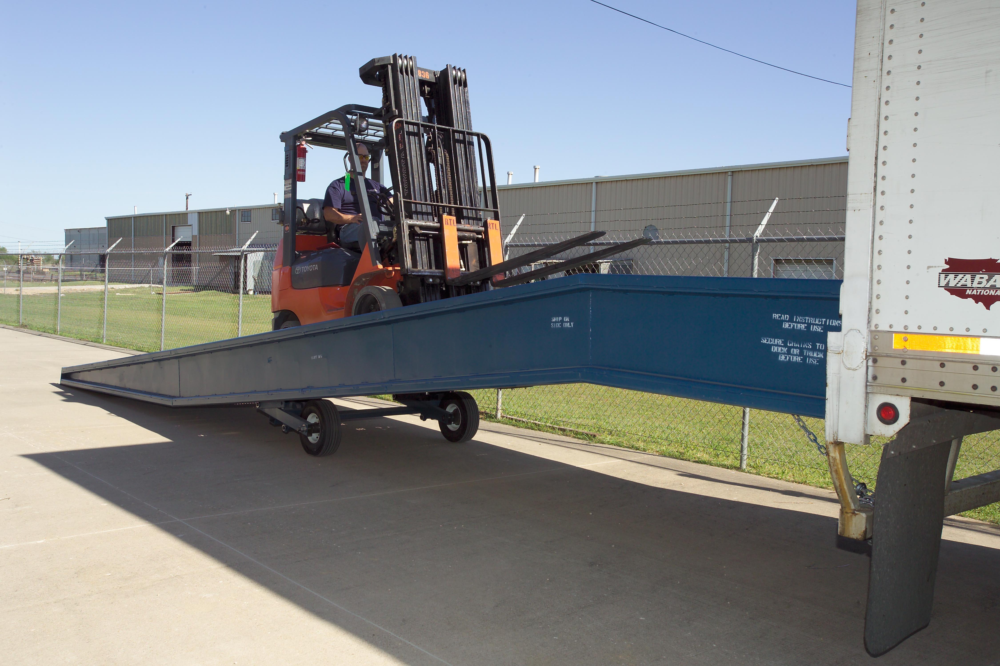
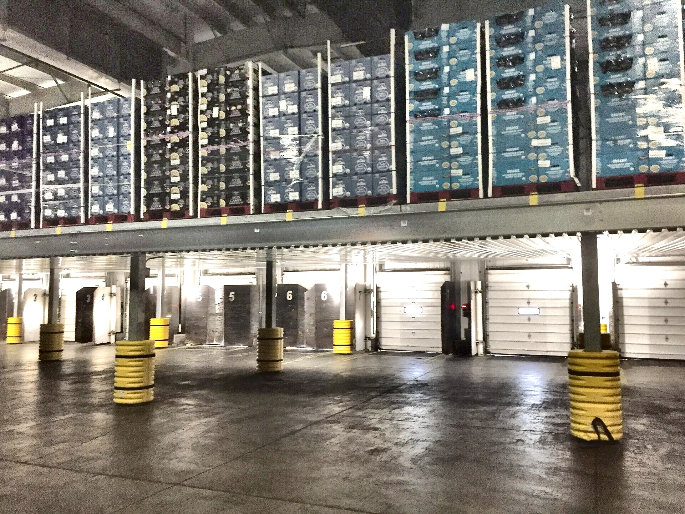

Dock Equipment Built for Control, Visibility, and Uptime
Dock levelers, vehicle restraints, and connected controls that keep trailers locked down, product moving, and dock crews out of harm's way—every shift, every door.
The Dock Is the Busiest Door You Have
Every pallet in or out of the building crosses a dock leveler first—so it has to hold up to constant cycles without becoming the bottleneck.
We look at trailer types, leveler capacity, dock traffic, restraint compatibility, and safety requirements before recommending equipment. Working with McGuire Dock Equipment gives us hydraulic, air-powered, and mechanical levelers, vehicle restraints, and iDock control systems built to hold up under daily loading dock activity.
What We Evaluate
- Trailer height variation, dock height, and leveler capacity needed
- Door counts, trailer volume, and how fast doors need to turn over
- Restraint style—hook, wheel, or hybrid—matched to your fleet mix
- Communication needs between drivers, dock crews, and forklift operators
- Weather exposure, temperature control, and sealing requirements
- How dock equipment ties into doors, safety barriers, and existing controls
Control. Visibility. Connectivity.
Trailer mix, dock height, traffic volume, and safety requirements look different at every facility. We compare levelers, restraints, and dock controls to build a setup around how your dock actually runs.

Dock Levelers
Hydraulic, air-powered, and mechanical levelers bridge the gap between dock and trailer bed, built to handle constant cycling without downtime.
Best fit: any dock moving palletized freight
Vehicle Restraints
Automatic and manual restraints lock the trailer to the dock during loading, keeping it from creeping or separating while forklifts are inside.
Best fit: high-volume docks with constant trailer turnover
iDock Controls
Connected control systems give real-time status on every door—leveler position, restraint engagement, and door state—from one dashboard.
Best fit: multi-door facilities wanting dock visibility
Dock Communication Systems
Red/green traffic lights and audible signals keep drivers, dock crews, and forklift operators synced on exactly when it's safe to load.
Best fit: docks separating driver and crew signals
Dock Impact & Fall Protection
Impact barriers and fall protection netting cover the opening when a trailer pulls away, keeping pedestrians and equipment away from the edge.
Best fit: tightening up OSHA compliance at the dock edge
Yard Ramps & Portable Access
Portable ramps add a loading point anywhere in the yard—no fixed dock required—for overflow trailers or facilities without one.
Best fit: outdoor loading and overflow trailer capacity
Complete Dock Packages
Levelers, restraints, seals, safety barriers, and controls specified together as one coordinated package across every door on the dock wall.
Best fit: new construction and full dock retrofitsFrom Dock Walkthrough to Equipment That Holds Up
Every dock project starts with your trailer mix, traffic volume, safety needs, and how crews actually work the door, so the equipment we spec matches how the dock runs day to day.
Evaluate
Walk the dock wall, measure trailer heights, review traffic patterns, and flag safety and compliance gaps door by door.
Design
Match levelers, restraints, seals, and controls to your fleet mix and throughput, then plan the install around your operating hours.
Implement
Coordinate installation and commissioning with McGuire and our other partners, keeping doors in service throughout.
Ready to Get More Control Over Your Dock?
Replacing worn-out levelers, adding restraints, or wiring up dock-wide visibility with iDock—we'll help you find equipment that keeps trailers secure and product moving.